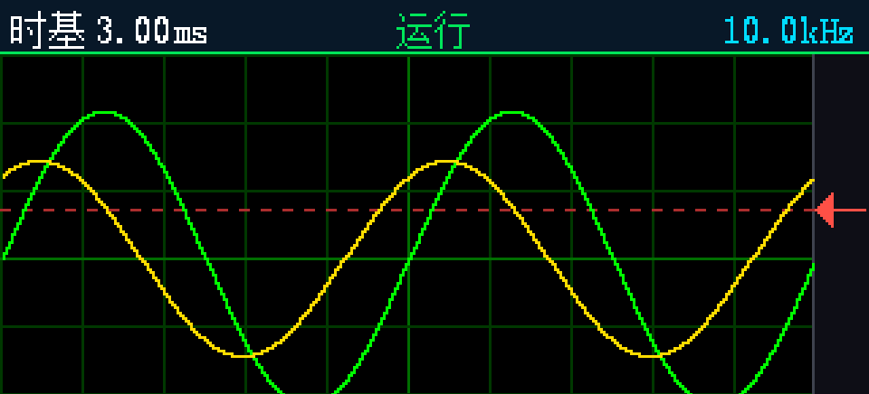

A Personal Space
夜坐所安
在广州，收着一些照片、随笔和喜欢的音乐。
Local Time / 广州
--:--
·····—
UTC+8
01 / Selected Project
双核示波器
做完了STM32F407 负责采集与触发，ESP32-S3 负责网页示波器，两核之间一根 460800 bps UART 走自制 CRC-8 帧协议。

最近写下的
十月
October
2026